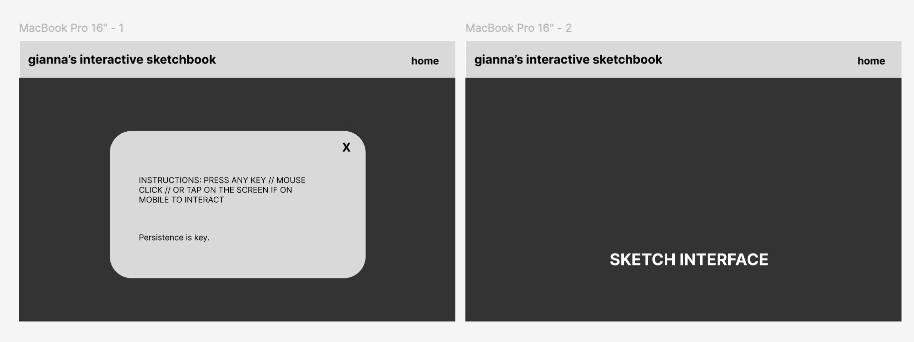
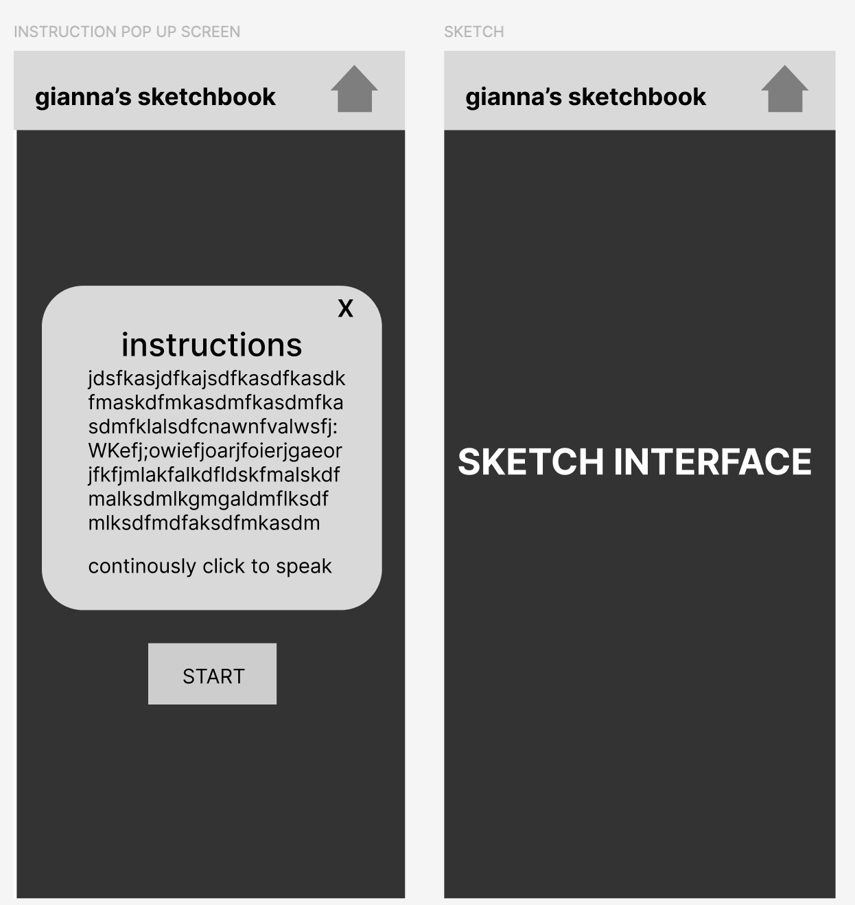

For this first iteration, I made two structural decisions on the appearance of the pc and mobile interface. I added a navigation bar with a clear “Home” button, and I moved the instructions and description into a popup screen that users can open and exit at any time. These changes create a more defined framework around the interaction. The navigation bar directly addresses the issue of control identified in the audit. Previously, users had no clear way to reset or leave once they entered the experience. The persistent Home button now provides a way to exit out of the experience without clicking the back button on their web browser. The home button allowing users to return to a stable starting state from within the UI. While the interaction itself remains overwhelming, this addition establishes a boundary around it. The system may still feel dominant internally, but structurally, users are no longer stuck on the page of the sketch.
The popup for instructions and description addresses the lack of informative feedback by changing how guidance is delivered. Instead of embedding information within the interaction, where it competes with noise and becomes difficult to interpret, it is now separated into a distinct, readable layer. This creates a clearer hierarchy between the experience and its explanation. This structure also allows for flexible engagement. Users can read the instructions before starting, ignore them entirely, or return to them after encountering confusion. Because the popup is optional and dismissible, it supports different approaches without forcing a linear path. It also reduces initial cognitive overload by giving users a controlled space to orient themselves before entering the interaction. At the same time, the popup acts as a stable reference point. Since the system does not clearly communicate progression, users can revisit the instructions to double check how the sketch works on a seperate layer that they can access at any time. This maintains access to clarity without reducing the overall intensity or ambiguity of the experience. I think I forgot to include the button they can reselect the popup after they exit it the first time, so I will need to add that in the next iteration.

